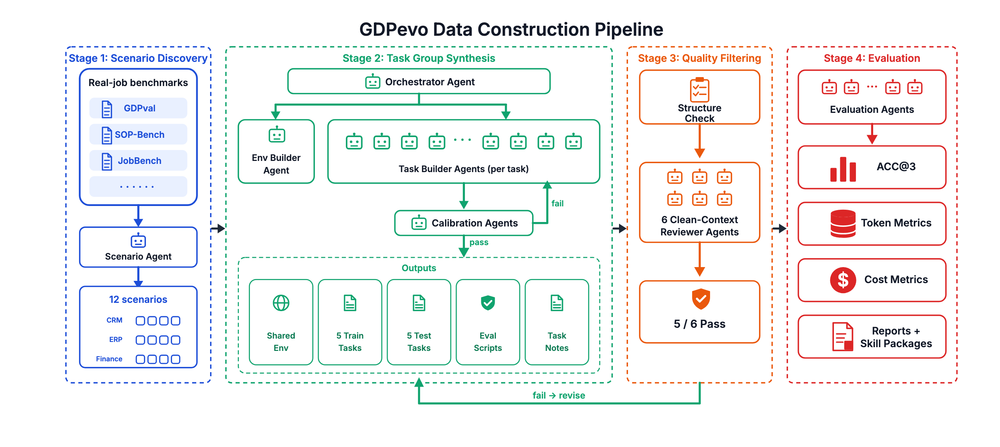

Measuring Agent Self-Evolution on Real Business Work 在真实业务工作上衡量 Agent 的自我进化
In the AI era, once something can be evaluated and that evaluation can be automated, the problem is essentially solved. Better evaluation begets better agents; better agents in turn drive sharper evaluation — and the loop converges fast. 在 AI 时代，一件事如果能被评估，并且评估可以被自动化，那它基本上就已经被解决了。更好的评估孕育更好的 agent，更好的 agent 又反过来推动更精细的评估——这个循环收敛得很快。
Self-evolution — agents that rewrite their own skills, memory, or harness to get better at a class of tasks over time — is a problem the field clearly cares about. Companies built around agentic self-improvement (Cognition, Reflection AI, and others) have raised on the order of billions of dollars in 2025 alone. Yet on real productivity work — auditing AP invoices, reconciling event sponsorship across CRM and finance, building a branch close-out package — there is essentially no benchmark for whether an agent can actually self-evolve. It can't be measured today, let alone measured automatically. Self-evolution——agent 通过自己改写 skill、memory 或 harness，在一类任务上越做越好——是一个业界很关注的问题。围绕 agent 自我进化的公司（Cognition、Reflection AI 等）仅 2025 一年就募集了约 数十亿美元的资金。然而在真实生产力工作这一面——审核 AP 发票、把展会赞助在 CRM 和财务两边对账、做一个分行月度结账包——几乎没有 benchmark能告诉我们 agent 到底有没有 self-evolve。目前它根本测不了，更谈不上自动化测。
GDPevo fills that gap. It is both a process for automatically building self-evolution benchmarks on real-job tasks, and a released benchmark produced by that process — twelve task groups across CRM, ERP, and Finance, each with five train tasks and five test tasks under a shared environment and rule-based graders. The construction-and-evaluation pipeline is shown in later sections. GDPevo 就是来补这个 gap 的。它既是一套流程——在真实业务任务上自动化地构建 self-evolution benchmark；也是这套流程的产物，一份已发布的 benchmark——12 组 task group，覆盖 CRM、ERP、Finance，每组 5 个 train + 5 个 test，共享同一个环境，用基于规则的 grader 打分。构建与评估的整体流程在后续章节中展示。
Automating the construction and evaluation of productivity-flavored datasets has two hard problems on the construction side. First, train and test must be cleanly separated so the agent can actually learn from train and have it show up on test — many existing benchmarks fail this and end up training and testing on the same set. We solve it with Hidden Rules: operational rules are planted across the train tasks in pieces and recombined on the test, so a passing score requires real abstraction, not memorization. Second, LLMs are lazy — they declare victory while quietly skipping work. We add a review mechanism: a panel of independent reviewer agents audits each task group end-to-end, and a group only ships when the reviewers confirm everything was actually delivered. 在生产力相关的数据集上做自动化构建与评估，构建侧有两大难点。第一，必须把 train 和 test 干净地分开，让模型真的能从 train 里学到东西，并且在 test 上体现出来——很多现有 benchmark 就是没做到这点，最后在 train 上训、在 train 上测。我们用Hidden Rules来解决这个问题：把业务规则拆散埋进 train，再在 test 上重新组合，要拿分就必须真的把规则抽象出来，而不是死记硬背。第二，大模型会偷懒——经常嘴上说"做完了"实际跳过了步骤。我们加了一套 review 机制：由若干独立的 reviewer agent 端到端审计每一组任务，所有内容确认交付了，这一组才会放行。
In addition, our evaluation makes three commitments. One, grading is rule-based, not LLM-as-a-judge — every score is reproducible and every failure points to a specific rule. Two, both cost and accuracy are first-class citizens — a useful agent isn't just one that gets the right answer, it's one that gets there more cheaply over time. Three, the workspace is natural-language driven — you describe the experiment and the chart you want in one sentence, and a coding agent generates the analysis on the fly; you don't write code yourself. 在评估侧，我们坚持三件事。第一，规则化打分，不用 LLM-as-a-judge——每一个分都是可复现的，每一次失败都能定位到具体的规则。第二，cost 与 accuracy 同为一等公民——一个好用的 agent 不仅要答得对，还要随时间推移、用更少的代价把题做出来。第三，工作区由自然语言驱动——你用一句话描述要跑的实验和想要的图表，一个 coding agent 当场生成分析代码出图；你自己不需要写代码。
We close with evaluation and findings. On all three agent harnesses we tested, self-evolution lifts held-out accuracy by +17 to +22 points; on two of them token usage actually goes down, not up — fluency, not just a higher score. Below, we walk through how this benchmark is built, and how it is used. 最后是 evaluation 和 findings。在我们测的三套 agent harness 上，self-evolution 都把 held-out 准确率提升了 +17 到 +22 个百分点；其中两套 harness 上 token 消耗不增反降——变得更熟练，不止是分数变高。下面我们就来看看这个 benchmark 是怎么被构建出来的，以及怎么使用。
How we built it.我们怎么构建。
Building a self-evolution benchmark for real business work poses two challenges. First, the construction should be agent-driven end-to-end — humans write the procedure once, agents do the rest. This matters for two reasons. It helps the benchmark outrun data leakage: as long as agents can spawn fresh tasks faster than models absorb the leaked ones, the benchmark stays ahead. It also lets the benchmark scale: when agents both build and evaluate, the loop is closed — no human bottleneck — and the benchmark can keep growing on its own. Second, train and test have to be related but not redundant: the train tasks must teach a real, hidden lesson that pays off only when the lesson is extracted, not memorized. 为真实业务工作构建一个 self-evolution benchmark，有两个 challenge。第一，构建过程应该是 agent 端到端跑出来的——人只把流程写一次，剩下交给 agent。这件事之所以重要有两个原因。它能帮 benchmark 跑赢数据泄露：只要 agent 生成新题的速度比模型吸收已泄露题的速度快，benchmark 就一直保持领先。它也让 benchmark 能真正 scale：当 agent 既负责构造、又负责评测，整个回路就闭合了——没有人力瓶颈，左脚踩右脚，benchmark 可以自己长大。第二，train 和 test 要相关、但不能冗余：train 必须真的"教"一个隐藏的规则，这个规则只有被抽象出来才会在 test 上派上用场，而不是被死记下来。
Built end-to-end by agents.从头到尾，全部由 agent 完成。
Humans wrote the pipeline once. After that, agents do everything (illustrated below). They pull seed scenarios from public real-job benchmarks (GDPVal, SOP-Bench, JobBench) and spawn many candidate task groups from those seeds. For each group, they build a shared environment and author 5 train + 5 test tasks with rule-based evaluators. A calibrator then tunes difficulty so that an evolution setup clearly beats a no-evolution setup — this filters out tasks where evolution wouldn't change the answer, keeping the benchmark focused on agents that actually have to learn from experience. Finally, six independent reviewer agents audit the result, and a group ships only when 5 of 6 pass — these reviewers exist because agents have a habit of declaring victory while quietly skipping work, so completeness, file presence, and planted hidden rules are exactly what gets checked. Twelve task groups make it through this filter and form the public release.
人只写一次 pipeline，之后全靠 agent（如下图所示）。先从公开的真实业务 benchmark（GDPVal、SOP-Bench、JobBench）里取种子场景，再据此 spawn 出大量候选 task group。每组里搭一个共享 env，写 5 个 train + 5 个 test 任务并配上基于规则的 evaluator。然后 calibrator 调难度，让 evolution 设定明显超过 no-evolution 设定——这一步是为了把那些"是否进化都不影响答案"的题筛掉，让 benchmark 集中在那些真的需要从经验里学东西的 agent 上。最后由 6 个互相独立的 reviewer agent 审核，6 个里 5 个通过这一组才放行——之所以要 reviewer，是因为 agent 经常嘴上说"做完了"、实际偷懒，所以审核的就是结构、完整性、文件是否齐全、隐藏规则是否真的埋了进去。最终通过这层筛选活下来、进入公开发布的，是 12 组 task group。

Hidden rules, spread across the train tasks.隐藏规则，分散到各个 train task 里。
For every task group we plant a small set of hidden operational rules. A CRM lead-capture group might encode a sponsor-status precedence rule (finance invoices outrank badge scans) and a suppression-list policy (don't contact certain segments). A procurement-readiness group enforces that open vendor-risk events and AP holds force a "held" line, regardless of how clean the PO looks. 每个 task group 我们都会埋一小组隐藏的业务规则。CRM 销售线索组可能埋了两条：赞助商身份的优先级（财务发票优先于胸卡扫描），以及 suppression list 政策（某些细分人群禁止联系）。采购就绪组则要求：只要供应商有 open 的 risk event 或 AP hold，对应行就必须 held，不管 PO 看起来多干净。
We spread these rules across the 5 train tasks, so each train task only exercises a subset. The 5 test tasks are deliberately built as combinations — say, the precedence rule together with the suppression policy. An agent that solves each train in isolation learns the rules in pieces. An agent that distills them into a single reusable skill has them all in one place — and when the test asks for two at once, it doesn't need to rediscover them. That's why a higher test score is real evidence of learning, not luck. 我们把这些规则分散到 5 个 train 里，每个 train 只触发一部分。5 个 test 故意被设计成这些规则的组合——比如同时触发"优先级 + suppression"。只盯着单个 train 做的 agent 学到的是碎片；把这些规则整理进一份可复用 skill 的 agent 则把它们放在一处——test 同时问两条时，它不需要重新发现。这就是 test 分数变高的原因，是真的"学到了"，而不是运气。
How to evaluate with it.怎么用它做评估。
Two things we want from an evaluation harness: it should grade in a way you can audit; and it should treat cost as a first-class citizen alongside accuracy. Each one motivated a specific design. 我们对评估 harness 有两个要求：评分必须可被人审计；cost 要和 accuracy 同等重要。下面两块就是为了满足这两个要求。
Rule-based grading, not "ask another LLM".基于规则的评分，而不是"再叫一个 LLM 来判"。
GDPevo grades with deterministic, rule-based checkers — for example, was the right set of records returned, did the amount round to the right precision. Two things follow. First, the score is reproducible: the same answer always gets the same grade, regardless of who runs it or when. Second, every failure is traceable: instead of a vague verdict, you see exactly which rule was violated and by how much. That trace is what makes the benchmark useful for diagnosis — you can read it back to find weak spots in your agent and feed those weak spots into the next round of skill or memory updates. GDPevo 用确定性的 rule-based checker 打分——比如返回的记录集对不对、金额是否遵守了要求的精度。这带来两个好处。第一，评分是可复现的：同一份答案，谁跑、什么时候跑，得到的分都一样。第二，每一次失败都是可追溯的：你看到的不是一个含糊的整体结论，而是具体哪一条规则被违反、扣了多少分。这种可追溯性让 benchmark 成为诊断工具——你可以反过来读这些 trace，找到你的 agent 短板在哪儿，再把这些短板喂回下一轮的 skill 或 memory 更新。
Cost and accuracy, both first-class.cost 和 accuracy 都是一等公民。
A useful agent isn't just one that gets the right answer — it's one that stops redoing the same legwork every time a similar task comes in. Self-evolution should look like a human getting fluent: more accurate and faster, with fewer tokens, fewer steps, and cleaner moves. So we instrument every run end-to-end: per-agent total token spend, plus a breakdown by reasoning, tool calls, and stage. That observability isn't only for our analysis — those traces also become the raw material the agent itself can learn from. 一个有用的 agent 不仅要答得对，还得不再每次都把同样的活儿重做一遍。Self-evolution 应该像人变熟练：更准、更快，用更少的 token、更少的步数、更干净的做法。所以我们对每一次运行都做端到端打点：每个 agent 的总 token 消耗，以及按 reasoning、工具调用、不同阶段的 breakdown。这套 observability 不只服务我们自己的分析——这些 trace 本身也是 agent 可以拿去 self-evolve 的学习材料。
Evaluations and findings.实测与结果。
Every run below was driven by natural language: we pointed a coding agent (Codex or Claude Code) at the evaluation workspace — a folder of plain Markdown guides, prompts, and directory conventions — typed one sentence describing the experiment and the chart we wanted, and the agent generated the analysis code, called the graders, and wrote the report. No hand-written harness, no SDK to learn. 下面这些实验都是用自然语言驱动跑出来的：我们把一个 coding agent（Codex 或 Claude Code）指向评估工作区——一个装满纯 Markdown 指南、prompt 和目录约定的文件夹——用一句话说清要跑什么实验、想要什么样的图，agent 就会自己生成分析代码、调 grader、写 report。没有手写的 harness，也没有要学的 SDK。
We ran the same 12 task groups under three settings, on three different agent harnesses: 我们在同样的 12 组 task group 上跑了三种设定，跨三套不同的 agent harness：
base— the agent solves the 5 test tasks cold, with no prior exposure to the 5 train tasks.base——agent 直接做 5 个 test，没接触过 5 个 train。demo— the agent reads the 5 train tasks with their gold answers first, distills skills/memory from them, and then takes the test. (Analogous to SFT.)demo——agent 先读 5 个 train 的题目和标准答案，从中沉淀 skill/memory，再去做 test。（类似 SFT。）reflect— the agent attempts the 5 train tasks without seeing answers, gets back graded reward and feedback, updates its skills/memory from what it got wrong, then takes the test. (Analogous to RL.)reflect——agent 看不到答案，自己做 5 个 train，事后拿到 reward 和反馈，改自己的 skill/memory，再去做 test。（类似 RL。）
base48.35%709.21.08demo65.99%466.10.81reflect67.13%458.70.79base49.11%376.80.61demo70.90%340.80.55reflect67.94%331.90.56base50.17%318.90.72demo68.24%383.50.80reflect67.98%365.20.79
The shape is the same on all three harnesses: skills lift held-out accuracy by ~17–22 points, and on the GPT-5.5 / Opus 4.8 setups tokens go down, not up — the fluency story, not just a higher score. On one task group (operational financial modeling), Codex went from 42.76% to 92.47% with fewer tokens than cold start; on the same group, Claude Code's demo reached 100%, up from 51.76%.
三套 harness 形状一致：skill 让 held-out 准确率提升 约 17–22 个百分点，且在 GPT-5.5 / Opus 4.8 这两套上，花的 token 反而更少——这正是"变熟练"，而不仅仅是分数更高。在 operational financial modeling 这一组上，Codex 从 42.76% 升到 92.47%，token 比冷启动还少；同一组上，Claude Code 的 demo 直接到了 100%，起点是 51.76%。
GDPevo is a seed, not a finished product.GDPevo 是一颗种子，不是一件成品。
The tasks, environments, graders, generated skills, and full reports are open. Bring your own agents and scenarios. Submit harder hidden rules. The goal is not a leaderboard, but a public interface where agents that actually do productive work can be trained — and where the evidence of that improvement is open to inspection. 任务、环境、grader、生成的 skill 包、完整 report 都是开放的。欢迎带上你自己的 agent、你自己的业务场景，欢迎来挑战、欢迎提交更难的隐藏规则。 我们的目标不是一张 leaderboard，而是一个公共接口 —— 让真正能干生产力工作的 agent 在这里被训练出来，并且这种"它真的变好了"的证据可以被任何人审计。
@misc{gdpevo2026,
title = {GDPevo: Measuring Agent Self-Evolution on Real Business Work},
author = {PrismShadow Team},
year = {2026},
url = {https://github.com/Prism-Shadow/GDPevo}
}